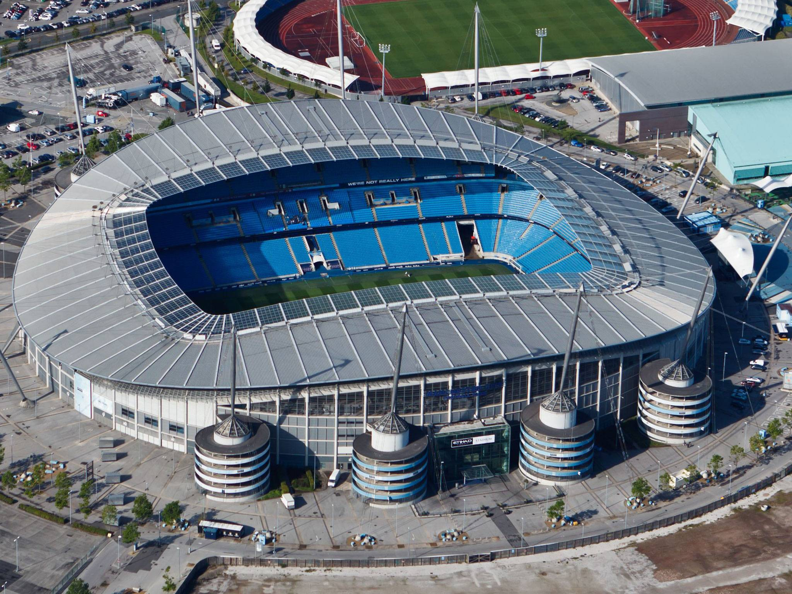

Home trafford centre Manchester City chill factor old trafford
Manchester City
manchester city the under dogs as theyve always been known for but a very great club coming from the champions division one of the biggest moments in there history of there team is there late winner with balotelli assisting it to sergio aguero against qpr to give manchester city the premier league title in the 93rd minute of added time as peope would say it felt like fergie time but alex ferguson came back to beat manchester city one last time to gain manchester united the title with alex ferguson retiring so he had to make it special manchester city are one of thes best teams in europe winning many premier leagues but striving to get the champiuons league title as they were hoping for

click here to find out more information about Manchester City!